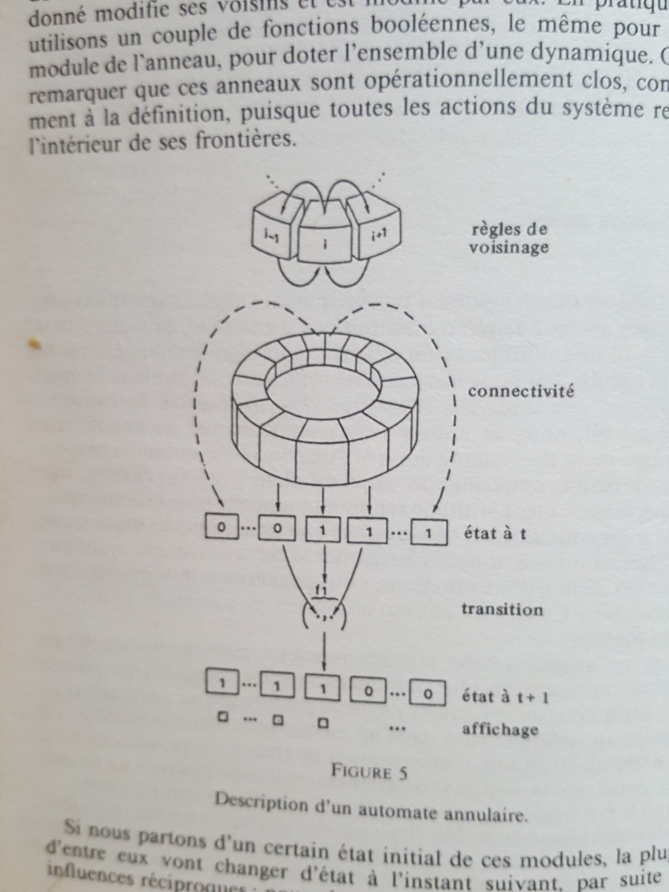
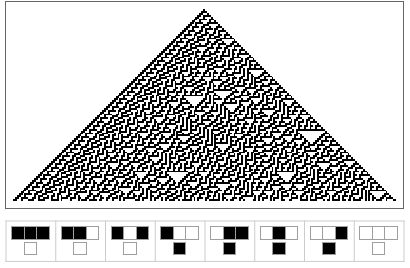

Autonomy, operational closure & perturbation coupling
After Humberto Maturana, Francisco Varela & Heinz von Foerster
This interactive application demonstrates a concept that appears in the French edition of Francisco Varela's Principles of Biological Autonomy (1979, translated as Principes d'autonomie biologique, 1989): a ring of Boolean automata, closed on itself, coupled with a random environment. Notably, this specific model is absent from the original English text — it may have been added for the French edition. It is a concrete illustration of how operational closure — the circular organisation of a system — can produce order from noise (von Foerster).
The model
A ring of N binary cells is arranged in a circle. Each cell's next state is determined by a local rule that depends on its own state and those of its immediate neighbours — the classic one-dimensional cellular automaton, but on a circular topology that closes the system on itself.
The ring evolves autonomously, without any external input, following its internal rule. Its behaviour arises from its own organisation, not from a program or external signal.

« Description d'un automate annulaire » — from the French edition of Principles of Biological Autonomy (1989, p. 218). The ring topology, the coupling mechanism with the random soup, and the output trace are shown schematically.

A Wolfram-class cellular automaton history (Rule 90). The triangular patterns emerge from a single seed — the same dynamics that, on a ring topology and under perturbation, produce the parity distinction described by Varela.
Coupling with the environment
Varela then asks: what happens if the ring is placed in a random soup of bits and occasionally collides with a 0 or a 1? The ring becomes structurally coupled to its environment: every so often, a discrete perturbation flips a small fraction of its cells, and the ring's closure then "digests" the disturbance.
The key finding (p. 219 of the French edition, Principes d'autonomie biologique, 1989 — this passage does not appear in the original English text of 1979):
« When it is coupled with a random soup of 0s and 1s, this particular ring can generate a distinction between specific subsequences — here, the distinction between even and odd subsequences. This distinction was not programmed. It results from the history of the system's coupling. Moreover, it creates a meaning that did not exist before, since we started from a random universe. From this chaos, the system can, through its operational closure, generate a distinction inseparable from its own operation. »
Interface overview
The application has many moving parts — lights, sounds, sliders — which can be disorienting at first glance. Here is a quick visual map:
Top bar (orange): the random soup of bits that the ring is coupled with. Each orange flash is a perturbation hitting the ring.
Left ring (orange): the automaton ring itself — active cells in orange, inactive in dark grey. You can see its state evolve here.
Bottom trace (violet): the ring's output after "digesting" a perturbation — how its internal dynamics reorganise the disturbance.
Right history (violet): a scrolling log of each perturbation and the ring's response — the measurable trace of the coupling history between ring and environment.
Top controls: all parameters — rule, cells, speed, perturbation settings, sound — are adjustable while running. Change them freely.
Start by just watching the ring run. Let your eye follow the orange cells, then glance at the violet output when a flash occurs. The controls will make more sense once you see what they affect.
What to observe
Autonomous regime: between perturbations, the ring evolves deterministically. Depending on the rule, it may stabilise, oscillate, or produce complex patterns.
Perturbation: a random hit flips a fraction of the cells (Intensity slider, 0–100%). Watch the orange flash on the top bar. The Rhythm slider controls how often hits occur.
Reaction: the ring may return to its previous configuration (even number of hits), bifurcate to a new attractor (odd), or absorb the perturbation and continue largely unchanged — depending on its internal state at the moment of impact.
Emergence: the parity distinction is not built into the system. It is enacted through the history of coupling — a form of sense-making at the most elementary level.
Controls
Rule: select the Wolfram rule. Rules marked with ⚡ show especially rich perturbation dynamics (many others do too — experiment).
Cells: ring size (16–256).
Perturbation:Intensity controls what percentage of cells may be flipped per hit (0–100%; set to 0% for a purely closed system). Rhythm controls how often hits occur (50% = default rate).
Speed / Step / Random / Clear: standard controls for the CA engine.
Sound: sonification of the ring's activity. Pitch, wave shape, duration, and volume are adjustable.
Roots
This model belongs to the lineage of second-order cybernetics and the biology of cognition:
Heinz von Foerster — On Self-Organising Systems and Their Environments (1960) — order from noise.
Humberto Maturana & Francisco Varela — Autopoiesis and Cognition (1973, 1980) — the organisation of the living as operational closure.
Francisco Varela — Principles of Biological Autonomy (1979, English) / Principes d'autonomie biologique (1989, French expanded edition) — the ring of Boolean automata appears only in the French edition as a minimal model of autonomy and sense-making through perturbation coupling.
Stephen Wolfram — Universality and Complexity in Cellular Automata (1984) — the rule space within which these rings operate.
⏺ Click inside the application to activate sound (browser autoplay policy).
Try it: start with Rule 126 (default) and observe how triangles emerge from the random soup and resist perturbations. Then explore Rule 94 (from stillness to near-chaos), Rule 90 (Sierpinski triangles), or Rule 150 (travelling particles). Lower the rhythm to let the ring settle; increase it to push it into a regime of continuous novelty.
second-order cyberneticsautopoiesisoperational closureorder from noiseVarelavon Foerstercellular automatonsense-making